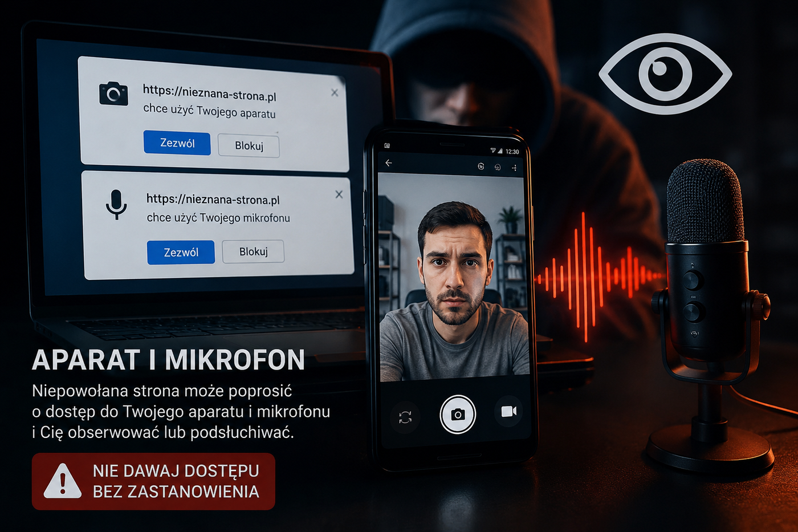

2. Aparat i mikrofon
Prawdziwe monity przeglądarki o zgodę
Kliknięcie przycisku poniżej uruchamia prawdziwy monit przeglądarki albo bezpieczny odczyt lokalny. Nic nie jest wysyłane na serwer.

Pokaz
Nie uruchomiono.
Jak może to być wykorzystane?
1. Fałszywy test sprzętu
Fałszywy test sprzętu: strona udaje panel wideokonferencji lub pomocy technicznej.
2. Podsłuch tła
Podsłuch tła: mikrofon może ujawnić rozmowy, nazwiska, numery zamówień albo dane klientów.
3. Podgląd otoczenia
Podgląd otoczenia: kamera może pokazać biurko, dokumenty, tablicę lub ekran obok.
Na co uważać:
Zezwalaj tylko wtedy, gdy funkcja jest naprawdę potrzebna. Po pokazie kliknij „Zatrzymaj podgląd”.
Zezwalaj tylko wtedy, gdy funkcja jest naprawdę potrzebna. Po pokazie kliknij „Zatrzymaj podgląd”.